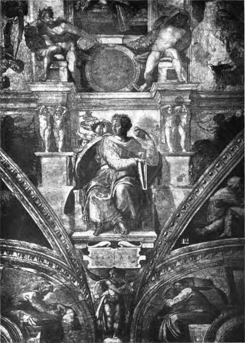
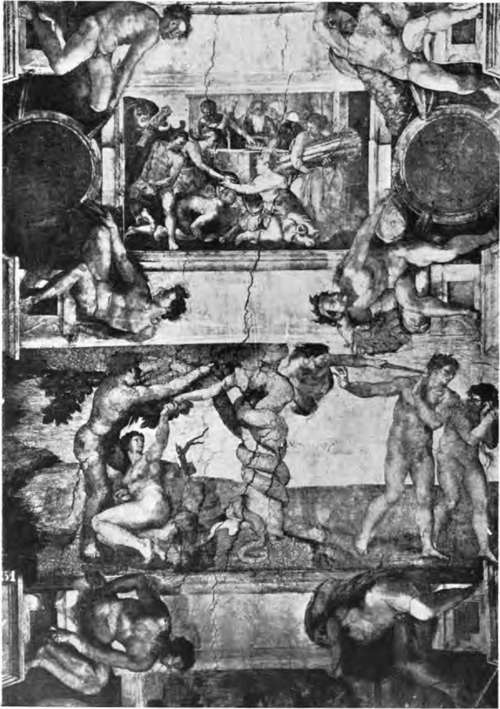
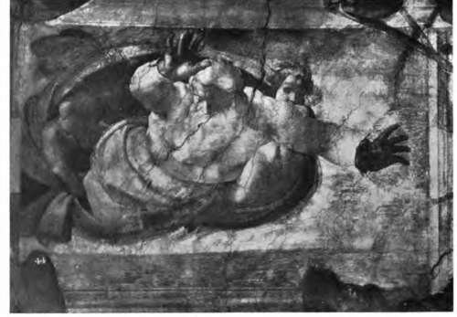

Encaustic Painting. Part 3
Description
This section is from the book "Mural Painting", by F. Hamilton Jackson. Also available from Amazon: Mural Painting: -1904.
Encaustic Painting. Part 3
The media used in encaustic are called by several ancient authors by the name of " Pharmaca." Suidas says that naphtha was called " Pharmacon," which suggested to Emeric-David that we had here an explanation of the possibility of painting in wax with the brush. He says that the wall first received a coat of oil, then a second of Greek pitch (pine resin from which the oil had been * extracted), mastic, and other materials of that nature. A chafing dish was then applied to the wall to make the resins penetrate it. On this coat was applied the painting ground, which was composed of wax, mastic perhaps, and a colouring matter, generally white, on which the artist painted with colours which had been mixed with a medium of wax and resin, ground up and applied with water only. (A wooden tablet prepared for painting was found at Pompeii, and partly confirmed the experiences of the Abbe R£qu6no, whose experiments are here resumed.) A varnish was next spread over the painting, probably composed of wax, mastic, and some liquid bitumen, and then came the "inustion," interior burning, with the chafing dish which united the various layers of resins by the application of heat The tradition of the use of wax has lasted to the present day. The paintings qf Buffalmacco in the Campo Santo at Pisa are done on a thin coat of wax. which appears to have been applied mixed with a volatile oil on a light plaster composed of a tenacious substance of a yellow colour soluble in water. The gold of Benozzo Gozzoli's paintings in the same place, separated from the ground by immersion in boiling distilled water, showed pellicules of wax on its surface. CobHus Ehodiginus of Eovigo in the fifteenth century writes to explain the use of the " cauterium," and Lucas Cranach painted a portrait of Luther in wax in 1520, as the inscription states. Wax is used in the preparation of Milanese stuccoes at the present day. The walls are first covered with several layers of ordinary mortar, and over these before they are dry a new plaster of one-sixteenth of an inch is spread, made of very fine sand and lime, for which they use a hard w trowel of the form of a parallelogram. On this plaster while still damp they apply another of the same thickness made of marble dust and lime slaked at least a fortnight before it is used. When this is almost dry it is covered with another layer of stucco made of one-third marble dust and two-thirds lime, after which, a white ground is required, pure lime is spread on the with the lime and marble dust of the second coat, tad afterwards they cover the surface two or three times with very liquid colour made with lime-water and soap-water. On this stucco they paint with a brush or sponge, allow it to dry, and then taking a little iron trowel which is warmed pass the back of it over the stuccoed surface till it is quite glossy. Finally, with a composition formed of three and a half ounces of wax and six ounces of soap, melted on the fire and dissolved in two bottles of boiling water, the stucco is covered several times, and then the trowel with a round back is passed rapidly over the already shiny stucco. Although the iron is cold the movement of rotation produces a considerable heat which replaces the Kavcri$.
THE PROPHET ISAIAH.
Portion of the ceiling of the Sistine Chapel, Pome, by Michel Angelo.
MM. Cros and Henry give some personal practical notes on encaustic 'which are exceedingly valuable and which include a list of colours and of the varying quantity of wax which should be mixed with the powders, according to their depth of tint, taken from Count Caylus. The wax itself should be pure and white, and should have added to it half its weight of refined pine resin, called by the French " colophane," in English, black resin (which they say should be as pale as possible). This gives greater brilliancy and tenacity.
THE FALL, AND SACRIFICE OF NOAH.
Part of the ceiling of the Sistine Chapel, Rome, by Michel Angelo.
to the colours. | The list is as follows (quantities by | ||||
weight):— | + | ||||
White lead | • • | 30 | | Naples yellow . | • | 30 |
Wax | • | 18 | Wax | • | 16 |
Flake white | • • | 30 | Charcoal black. | • | 30 |
Wax | • • | 20 | Wax | • | 45 |
Vermilion | • m | 90 | Ivory black | ft | 30 |
Wax | 40 | Wax | • | 40 | |
Carmine . | • •> | 30 | Lamp-black | • | 30 |
Wax | 45 | Wax | • | 40 | |
Lake | • • | 30 | Cologne earth . | • | 30 |
Wax | • * | 45 | Wax | • | 45 |
Green lake | 30' | Verditer . | • | 30 | |
Wax • | t • | 38 | Wax . .-. | • | 24 |
Ultramarine | • • | 30 | Stil de grain d'Angleterre | ||
Wax | • • | 30 | (brown pink ?). | • | 30 |
Prussian blue . | • • | 30 | | Wax | • | 45 |
Wax | • ft | 60 | Rouge brun d'Angleterre | ||
Yellow ochre | • • | 30 | (light red). | • | 30 |
Wax * . | • • | 40 | Wax | • | 30 |
Ocre de Ru | # m | 30 | Stil de grain de Troyes | • | 30 |
Wax | • * | 40 | Wax | • | 45 |
Burnt ochre | • • | 30 | Email fin d'Angleterre | • | 30 |
Wax | • • | 40 | Wax . ' . | • | 15 |
Terre d'ltalie . | • • ft | 30 | |||
Wax | • * | 40 | • | ||
The necessary implements are first a small charcoal furnace upon which to keep the palette warm when using the brush, to warm the irons with which to continue the painting and to prepare the coloured wax; then the hot palette, which is a disc of tinned metal, iron or copper, with saucer-shaped holes sunk in it, leaving a flat portion on which to mix tints (it should have an iron handle covered with wood so that it may be held comfortably); brushes of hoghair—but even badger may be used, if you are careful not to put them in too hot wax or to let them get out of shape by remaining too long on the hot palette; and several iron spatulas, bent at the ends so that the hand may follow the work without hiding it. Count Caylus* medium was made of wax liquefied in water by an infusion of salt of tartar. Bachelier also thought of this. He said that if oil was mixed with the wax it should be colourless and a powerful drier.
To prepare the rods of colour, you place on a mild fire a metal pot, tinned inside or enamelled (which is better). At the bottom you place the colour in fine powder; then with half a cake of wax you turn the colour as if you were mixing it. From time to time you throw into this mixture liquefied by the heat an equal quantity of resin, or more if you wish it. When the colour is equally distributed through the mixture you pour it out into channeled moulds. In this way all sorts of mixed colours may be made, such as half tints and shadows, the blues of skies, greens of landscapes, etc.
Any surface may be painted on, but you must make sure that it is not damp. The brush-work should give a vigorous look to the sketch if it has been rapid and well touched in, before the heated irons are used to unite the tints. All colours may be used with wax, since it locks them up. The colours dry almost immediately and retouchings can be executed for an indefinite period without scraping away. The cold palette used in retouching is of wood, and on it the colours in frequent use are placed in the form of pastilles. " The wax gives a silky reflex to the tones, and the subjects painted thus acquire a marvellous intensity of life. Encaustic does not scale off; neither the sun nor the heat of rooms makes any alteration in the colours, and worms and damp are kept away by the wax. It attracts dust very little and does not change at all with time".
Creation subject from the ceiling of the Sistine Chapel, Rjomey by Michel Angelo.
Continue to: